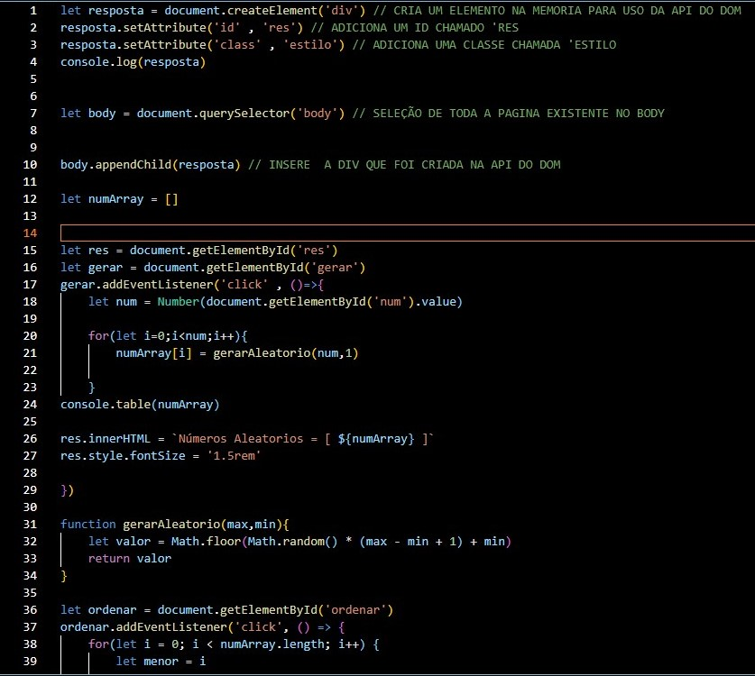

Implementamos algoritmos eficientes para diversas aplicações.
Exemplos de Algoritmos
Ordenação por Bolhas
Algoritmo que itera pela estrutura de dados e comparaum par de valores por vez.
Função Bubble sort
Ordenação por Inserção
Ideal para pequenos conjuntos de dados
Função Inserction sort
Ordenação por Seleção
Algoritmo é semelhante à ordenação por bolha, mas, em vez de colocar os valores maiores no final da estrutura de dados, ela se concentra em colocar os valores menoresno início.

Função Selection sort
Fluxogramas de Algoritmos
Fluxograma DERFluxograma Conceitual DERFluxograma Logico MER